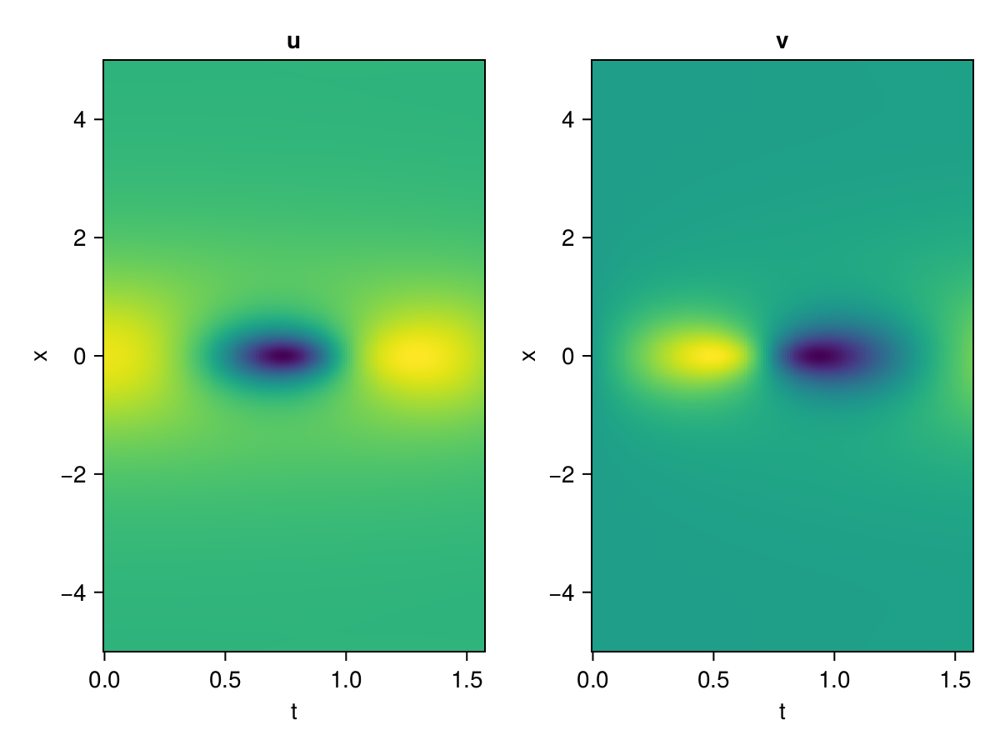
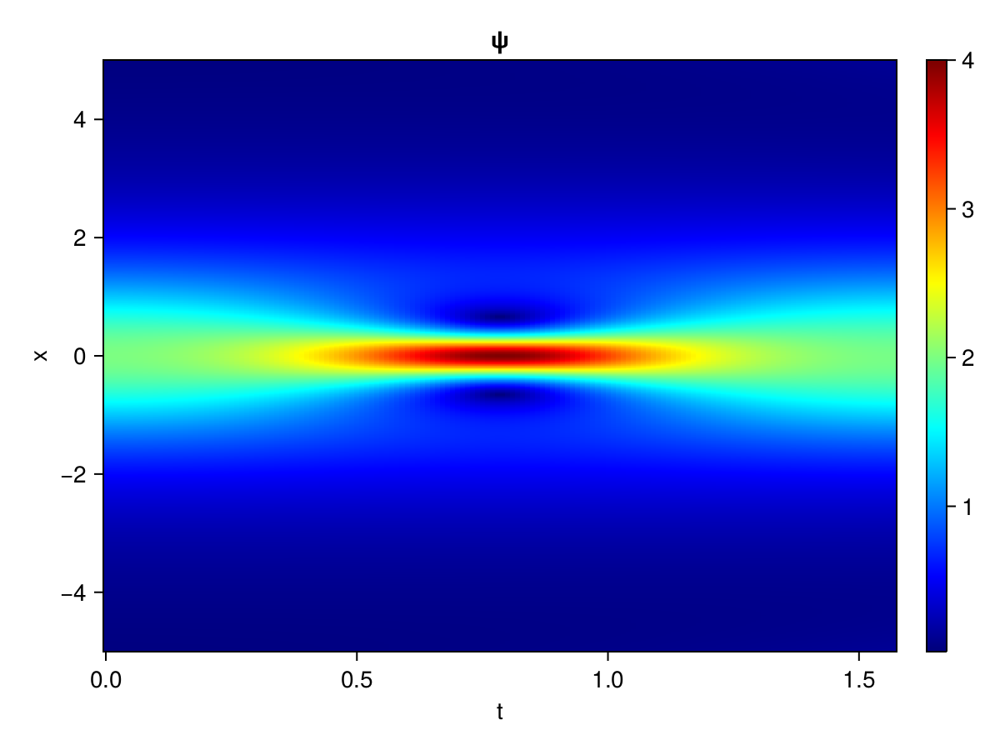
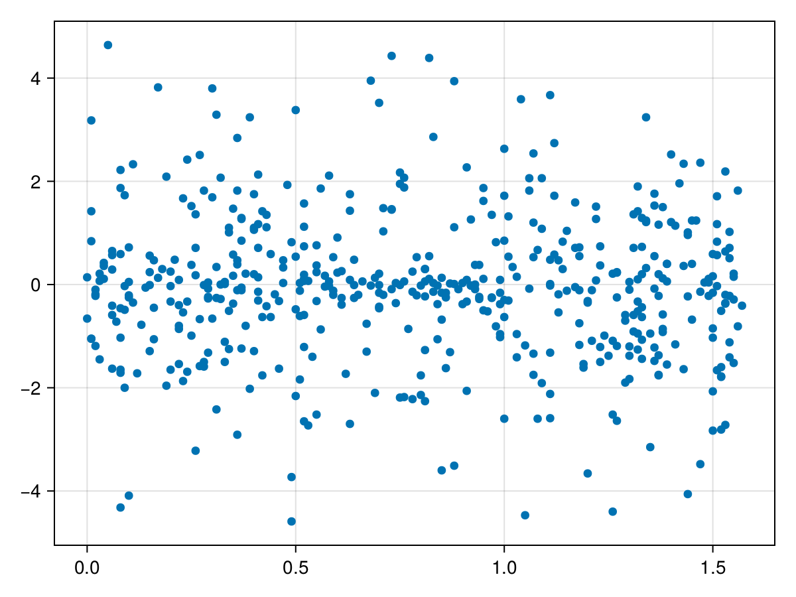

Schrödinger equation
The nonlinear Shrödinger equation is given by
\[\mathrm{i} \partial_t \psi=-\frac{1}{2} \sigma \partial_{x x} \psi-\beta|\psi|^2 \psi\]
Let $\sigma=\beta=1, \psi=u+v i$, the equation can be transformed into a system of partial differential equations
using ModelingToolkit, IntervalSets, Sophon, CairoMakie
using Optimization, OptimizationOptimJL, Zygote
@parameters x,t
@variables u(..), v(..)
Dₜ = Differential(t)
Dₓ² = Differential(x)^2
eqs=[Dₜ(u(x,t)) ~ -Dₓ²(v(x,t))/2 - (abs2(v(x,t)) + abs2(u(x,t))) * v(x,t),
Dₜ(v(x,t)) ~ Dₓ²(u(x,t))/2 + (abs2(v(x,t)) + abs2(u(x,t))) * u(x,t)]
bcs = [u(x, 0.0) ~ 2sech(x),
v(x, 0.0) ~ 0.0,
u(-5.0, t) ~ u(5.0, t),
v(-5.0, t) ~ v(5.0, t)]
domains = [x ∈ Interval(-5.0, 5.0),
t ∈ Interval(0.0, π/2)]
@named pde_system = PDESystem(eqs, bcs, domains, [x,t], [u(x,t),v(x,t)])\[ \begin{align} \frac{\mathrm{d}}{\mathrm{d}t} u\left( x, t \right) =& - \frac{1}{2} \frac{\mathrm{d}}{\mathrm{d}x} \frac{\mathrm{d}}{\mathrm{d}x} v\left( x, t \right) - v\left( x, t \right) \left( \left|u\left( x, t \right)\right|^{2} + \left|v\left( x, t \right)\right|^{2} \right) \\ \frac{\mathrm{d}}{\mathrm{d}t} v\left( x, t \right) =& \frac{1}{2} \frac{\mathrm{d}}{\mathrm{d}x} \frac{\mathrm{d}}{\mathrm{d}x} u\left( x, t \right) + u\left( x, t \right) \left( \left|u\left( x, t \right)\right|^{2} + \left|v\left( x, t \right)\right|^{2} \right) \end{align} \]
pinn = PINN(u = Siren(2,1; hidden_dims=16,num_layers=4, omega = 1.0),
v = Siren(2,1; hidden_dims=16,num_layers=4, omega = 1.0))
sampler = QuasiRandomSampler(500, (200,200,20,20))
strategy = NonAdaptiveTraining(1,(10,10,1,1))
prob = Sophon.discretize(pde_system, pinn, sampler, strategy)OptimizationProblem. In-place: true
u0: ComponentVector{Float64}(u = (layer_1 = (weight = [-0.0003826022148132324 -0.38064587116241455; -0.3926699161529541 -0.400995135307312; … ; -0.32421594858169556 0.3339364528656006; -0.25630706548690796 0.20393240451812744], bias = [0.0; 0.0; … ; 0.0; 0.0;;]), layer_2 = (weight = [0.12995420396327972 -0.04188811406493187 … 0.3299005627632141 -0.4559004604816437; 0.3199462890625 -0.14042255282402039 … 0.3441331684589386 -0.20808129012584686; … ; -0.4580782949924469 -0.5156567096710205 … -0.20652645826339722 -0.17235201597213745; -0.5534486770629883 0.05992806330323219 … -0.11012202501296997 0.0011015041964128613], bias = [0.0; 0.0; … ; 0.0; 0.0;;]), layer_3 = (weight = [-0.024780305102467537 -0.26113730669021606 … 0.34816884994506836 0.08476370573043823; 0.3654301166534424 0.41037964820861816 … 0.09272447973489761 0.5827957391738892; … ; -0.5939101576805115 0.2729787826538086 … -0.22931165993213654 -0.2699946165084839; -0.24249890446662903 -0.24213266372680664 … -0.580337405204773 0.5742273926734924], bias = [0.0; 0.0; … ; 0.0; 0.0;;]), layer_4 = (weight = [0.3459720313549042 -0.1650964915752411 … 0.5079982876777649 0.23503658175468445; 0.2574112117290497 0.5431053638458252 … 0.23881296813488007 -0.47902044653892517; … ; -0.6068481802940369 0.3694879114627838 … 0.15194787085056305 0.4295894205570221; 0.2951755225658417 0.599928617477417 … -0.2142835557460785 0.2843714654445648], bias = [0.0; 0.0; … ; 0.0; 0.0;;]), layer_5 = (weight = [0.37554439902305603 -0.058343514800071716 … 0.43706247210502625 -0.02860633283853531], bias = [0.0;;])), v = (layer_1 = (weight = [-0.38622570037841797 -0.4629294276237488; -0.1285223364830017 0.2599537968635559; … ; -0.22661536931991577 -0.3886430263519287; 0.12947708368301392 0.027989685535430908], bias = [0.0; 0.0; … ; 0.0; 0.0;;]), layer_2 = (weight = [0.5832936763763428 -0.46044081449508667 … 0.5453681945800781 -0.22143125534057617; -0.1359414905309677 0.12081404030323029 … -0.013909511268138885 -0.06892464309930801; … ; -0.36628276109695435 0.4899846017360687 … 0.32999858260154724 -0.020958436653017998; -0.3939213752746582 -0.02231595478951931 … -0.4205772876739502 -0.43475237488746643], bias = [0.0; 0.0; … ; 0.0; 0.0;;]), layer_3 = (weight = [0.5851403474807739 -0.29620492458343506 … 0.40067794919013977 0.4573366940021515; 0.5787054300308228 0.09244883060455322 … 0.29666846990585327 -0.5231637954711914; … ; 0.4231858253479004 0.33421605825424194 … 0.38511744141578674 -0.6069589257240295; -0.5276352167129517 -0.11888302862644196 … 0.02472694031894207 -0.34794166684150696], bias = [0.0; 0.0; … ; 0.0; 0.0;;]), layer_4 = (weight = [-0.29482966661453247 0.08477772027254105 … 0.004233881831169128 0.14617280662059784; 0.0851302370429039 -0.32334810495376587 … -0.2117031365633011 -0.3015895187854767; … ; 0.41421040892601013 0.6040398478507996 … -0.013932287693023682 0.4643499255180359; 0.5485574007034302 0.02038917876780033 … -0.3489673137664795 0.1651434302330017], bias = [0.0; 0.0; … ; 0.0; 0.0;;]), layer_5 = (weight = [-0.4851026237010956 0.5999425053596497 … -0.24841631948947906 -0.4923669099807739], bias = [0.0;;])))Now we train the neural nets and resample data while training.
function train(pde_system, prob, sampler, strategy, resample_period = 500, n=10)
bfgs = BFGS()
res = Optimization.solve(prob, bfgs; maxiters=2000)
for i in 1:n
data = Sophon.sample(pde_system, sampler)
prob = remake(prob; u0=res.u, p=data)
@showprogress res = Optimization.solve(prob, bfgs; maxiters=resample_period)
end
return res
end
res = train(pde_system, prob, sampler, strategy)u: ComponentVector{Float64}(u = (layer_1 = (weight = [-0.08042039552970369 -0.9119253384318774; -0.7761266949201228 -0.9946343613973173; … ; -0.41403688143218814 0.9707766364379571; -0.3441540293521433 0.3083877866411489], bias = [-0.872318863204239; -0.1881698335742455; … ; -0.6090349388664511; -0.3010731090842925;;]), layer_2 = (weight = [0.1726720780065706 -0.00019880092812057102 … 0.07868002310304184 -0.3907819886681508; 0.2345143729402095 0.10017392876749893 … 0.32674737445559576 -0.24222694689915886; … ; -0.5286477751487829 -0.3113180554874196 … -0.16385257518312676 -0.059854011054381644; -0.37242985510138527 0.4402888005025086 … -0.47683059169529557 -0.25664895841760965], bias = [-0.44467451879237074; -0.2066603242431198; … ; -0.26463826370470067; 0.17878860283627565;;]), layer_3 = (weight = [-0.020079080905837005 -0.023613138723004724 … 0.0038806351340815526 0.12104658695501957; 0.22877066622792686 0.6731168168436773 … 0.19259174377569988 1.0320070366681682; … ; -0.3355661466556191 0.36387883282138606 … -0.10947336831871722 -0.21952297966698947; -0.0330228109248554 -0.24707797986787416 … -0.767652516170238 0.532749857010994], bias = [-0.19988387186597376; -0.13034622013019265; … ; -0.25110913174948335; -0.22793840541544297;;]), layer_4 = (weight = [-0.06951533545392323 0.14055771128692637 … 0.5884372609755886 0.6564136982482385; 0.259886263520555 0.47979082269227313 … 0.65110706714801 -0.6367802506847324; … ; -0.29998573128575257 0.398279559411819 … -0.08089324117881759 0.7431833943517336; 0.25704620628432917 0.4724952319133076 … -0.041854126949911294 0.2109568223977663], bias = [-0.24658237264748503; 0.18324650685738927; … ; -0.20199738688743782; 0.06834803131171578;;]), layer_5 = (weight = [0.3373427159823596 -0.7972769730231934 … 0.60683400568597 -0.015604673802664946], bias = [-0.05573589892154675;;])), v = (layer_1 = (weight = [-0.3877295169236698 0.23415261829056122; 0.36465859406430884 0.2522858908954538; … ; -1.5748217413685917 -0.7881150566203335; 0.49211428455376915 0.045029583078910404], bias = [-0.1691138521625875; -0.21289844553359996; … ; 0.34009942961444184; -0.3532063261512725;;]), layer_2 = (weight = [0.8341768428161516 -0.36357082264612434 … 0.6294634148828736 -0.3587908557903869; -0.33025182251621205 0.23762220081010282 … -0.32735467879992863 -0.1332420530772589; … ; -0.3648212789072653 0.5293856030695937 … -0.07360763805414904 0.2448898781930547; -0.7473845255918622 0.07171373965579239 … -0.5124497543010914 -0.38335239188003406], bias = [-0.3705822096163994; 0.26338123539466185; … ; -0.028215553499130068; 0.34364562227296935;;]), layer_3 = (weight = [0.47434315885341843 0.29237424779851645 … 0.39926947382014166 -0.042711058666418486; 0.2266200398487118 -0.020487261615576065 … 0.2681001276793712 -0.1497737087692748; … ; 0.11170742853657827 0.6533422467531511 … 0.5982512585772307 0.06993926507041114; -0.5027627566457072 -0.37296901313471464 … -0.2025774408294431 -0.7580467761383249], bias = [-0.325888419415874; 0.0015081248720813132; … ; -0.09895843686509165; 0.16318025770336064;;]), layer_4 = (weight = [-0.08559233712344858 0.15027544377070706 … 0.014034340089487951 0.14160211138424747; 0.5125335319857962 0.6369177348751128 … -0.36238902386531546 0.6329807568865728; … ; 0.5464423632485192 0.3968842930559927 … -0.11977935061497938 -0.020638711239561076; 0.40230701815458847 0.35239613866067654 … 0.23369770455477012 0.7032813773431091], bias = [0.2291391985219874; 0.34085396223578923; … ; -0.5855354264867817; 0.5823873496060742;;]), layer_5 = (weight = [0.058404779818173394 0.5386181470739541 … -0.23811097775804646 -0.9816963567025747], bias = [0.18976765566826032;;])))phi = pinn.phi
ps = res.u
xs, ts= [infimum(d.domain):0.01:supremum(d.domain) for d in pde_system.domain]
u = [sum(phi.u(([x,t]), ps.u)) for x in xs, t in ts]
v = [sum(phi.v(([x,t]), ps.v)) for x in xs, t in ts]
ψ = @. sqrt(u^2+ v^2)
axis = (xlabel="t", ylabel="x", title="u")
fig, ax1, hm1 = heatmap(ts, xs, u', axis=axis)
ax2, hm2= heatmap(fig[1, end+1], ts, xs, v', axis= merge(axis, (; title="v")))
display(fig)
axis = (xlabel="t", ylabel="x", title="ψ")
fig, ax1, hm1 = heatmap(ts, xs, ψ', axis=axis, colormap=:jet)
Colorbar(fig[:, end+1], hm1)
display(fig)
Customize Sampling
Bascially any sampling method is supportted. For example we can sample data according to the predicted solution.
using StatsBase
data = vec([[x, t] for x in xs, t in ts])
wv = vec(ψ)
new_data = wsample(data, wv, 500)
new_data = reduce(hcat, new_data)
fig, ax = scatter(new_data[2,:], new_data[1,:])
prob.p[1] = new_data
prob.p[2] = new_data
prob = remake(prob; u0 = res.u)
# res = Optimization.solve(prob, bfgs; maxiters=1000)OptimizationProblem. In-place: true
u0: ComponentVector{Float64}(u = (layer_1 = (weight = [-0.08042039552970369 -0.9119253384318774; -0.7761266949201228 -0.9946343613973173; … ; -0.41403688143218814 0.9707766364379571; -0.3441540293521433 0.3083877866411489], bias = [-0.872318863204239; -0.1881698335742455; … ; -0.6090349388664511; -0.3010731090842925;;]), layer_2 = (weight = [0.1726720780065706 -0.00019880092812057102 … 0.07868002310304184 -0.3907819886681508; 0.2345143729402095 0.10017392876749893 … 0.32674737445559576 -0.24222694689915886; … ; -0.5286477751487829 -0.3113180554874196 … -0.16385257518312676 -0.059854011054381644; -0.37242985510138527 0.4402888005025086 … -0.47683059169529557 -0.25664895841760965], bias = [-0.44467451879237074; -0.2066603242431198; … ; -0.26463826370470067; 0.17878860283627565;;]), layer_3 = (weight = [-0.020079080905837005 -0.023613138723004724 … 0.0038806351340815526 0.12104658695501957; 0.22877066622792686 0.6731168168436773 … 0.19259174377569988 1.0320070366681682; … ; -0.3355661466556191 0.36387883282138606 … -0.10947336831871722 -0.21952297966698947; -0.0330228109248554 -0.24707797986787416 … -0.767652516170238 0.532749857010994], bias = [-0.19988387186597376; -0.13034622013019265; … ; -0.25110913174948335; -0.22793840541544297;;]), layer_4 = (weight = [-0.06951533545392323 0.14055771128692637 … 0.5884372609755886 0.6564136982482385; 0.259886263520555 0.47979082269227313 … 0.65110706714801 -0.6367802506847324; … ; -0.29998573128575257 0.398279559411819 … -0.08089324117881759 0.7431833943517336; 0.25704620628432917 0.4724952319133076 … -0.041854126949911294 0.2109568223977663], bias = [-0.24658237264748503; 0.18324650685738927; … ; -0.20199738688743782; 0.06834803131171578;;]), layer_5 = (weight = [0.3373427159823596 -0.7972769730231934 … 0.60683400568597 -0.015604673802664946], bias = [-0.05573589892154675;;])), v = (layer_1 = (weight = [-0.3877295169236698 0.23415261829056122; 0.36465859406430884 0.2522858908954538; … ; -1.5748217413685917 -0.7881150566203335; 0.49211428455376915 0.045029583078910404], bias = [-0.1691138521625875; -0.21289844553359996; … ; 0.34009942961444184; -0.3532063261512725;;]), layer_2 = (weight = [0.8341768428161516 -0.36357082264612434 … 0.6294634148828736 -0.3587908557903869; -0.33025182251621205 0.23762220081010282 … -0.32735467879992863 -0.1332420530772589; … ; -0.3648212789072653 0.5293856030695937 … -0.07360763805414904 0.2448898781930547; -0.7473845255918622 0.07171373965579239 … -0.5124497543010914 -0.38335239188003406], bias = [-0.3705822096163994; 0.26338123539466185; … ; -0.028215553499130068; 0.34364562227296935;;]), layer_3 = (weight = [0.47434315885341843 0.29237424779851645 … 0.39926947382014166 -0.042711058666418486; 0.2266200398487118 -0.020487261615576065 … 0.2681001276793712 -0.1497737087692748; … ; 0.11170742853657827 0.6533422467531511 … 0.5982512585772307 0.06993926507041114; -0.5027627566457072 -0.37296901313471464 … -0.2025774408294431 -0.7580467761383249], bias = [-0.325888419415874; 0.0015081248720813132; … ; -0.09895843686509165; 0.16318025770336064;;]), layer_4 = (weight = [-0.08559233712344858 0.15027544377070706 … 0.014034340089487951 0.14160211138424747; 0.5125335319857962 0.6369177348751128 … -0.36238902386531546 0.6329807568865728; … ; 0.5464423632485192 0.3968842930559927 … -0.11977935061497938 -0.020638711239561076; 0.40230701815458847 0.35239613866067654 … 0.23369770455477012 0.7032813773431091], bias = [0.2291391985219874; 0.34085396223578923; … ; -0.5855354264867817; 0.5823873496060742;;]), layer_5 = (weight = [0.058404779818173394 0.5386181470739541 … -0.23811097775804646 -0.9816963567025747], bias = [0.18976765566826032;;])))